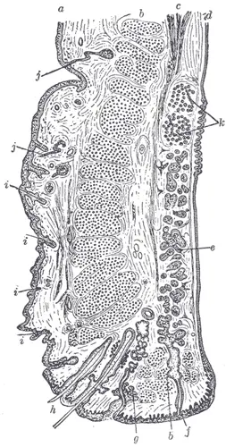

DX.10 — Apraxie de l’ouverture des paupières
L’apraxie d’ouverture des paupières empêche de rouvrir volontairement l’œil après une fermeture, sans spasme visible ni paupière basse au reposS7S17. Elle accompagne surtout le blépharospasme, la paralysie supranucléaire progressive et la stimulation du noyau subthalamiqueS2S10. Le médecin la distingue d’abord d’un ptosis et d’une paralysie douloureuse du nerf oculomoteur, qui seule impose une imagerie urgenteS18. Il la traite ensuite selon son mécanisme, en commençant par une injection prétarsale de toxine botuliqueS5AIPS.
1. Définition
Les critères de la Movement Disorder Society (MDS) de 2017 pour la paralysie supranucléaire progressive définissent l'apraxie d'ouverture des paupières comme une incapacité à initier volontairement l'ouverture après une fermeture palpébraleS7. Cette incapacité survient sans fermeture forcée involontaire, c'est-à-dire sans blépharospasme visible, et l'œil fermé reste fermé malgré la volonté du patientS7. Les mêmes critères attribuent souvent ce blocage à une activation de la portion prétarsale du muscle orbiculaire de l'œil, que l'examen à l'œil nu ne voit pasS7.
2. Épidémiologie (Suisse, puis Europe)
Les chiffres disponibles proviennent de centres européens spécialisés dans les mouvements anormaux et la stimulation cérébrale profonde. Le trouble survient surtout dans trois terrains : le blépharospasme essentiel, les syndromes parkinsoniens et leur stimulation, et les lésions cérébrales acquises. Son évolution et son retentissement expliquent qu'un patient voyant devienne fonctionnellement aveugle.
Le terrain le plus fréquent : la dystonie palpébrale
La prévalence du blépharospasme varie de 20 à 133 cas par million d'habitants selon la région étudiée, avec une prédominance féminine et un pic de début dans la sixième décennieS1. Selon la revue européenne de Defazio, beaucoup de patients atteints de blépharospasme présentent aussi une apraxie d'ouverture, ce qui en fait le premier terrain à connaîtreS1.
À Giessen, la série de Krack et Marion réunissait 32 patients : 20 avaient un blépharospasme idiopathique, 7 une paralysie supranucléaire progressive, 2 un syndrome parkinsonien dystonique et 3 une forme isoléeS2. Dans une cohorte italienne de 104 blépharospasmes isolés, l'apraxie d'ouverture s'associait aux spasmes prolongés de plus de 3 secondes, et non aux spasmes brefsS8.
| Donnée | Population | Valeur | Source |
|---|---|---|---|
| Prévalence du blépharospasme | Études régionales internationales | 20 à 133 cas par million | S1 |
| Répartition des terrains | 32 patients, Giessen | 20 blépharospasmes, 7 PSP, 2 syndromes parkinsoniens dystoniques, 3 formes isolées | S2 |
| Profils électromyographiques | 28 patients adressés pour blépharospasme, Amsterdam | 4 inhibitions involontaires pures du releveur ; 4 associées au blépharospasme ; 3 impersistances du releveur | S3 |
| Après stimulation du noyau subthalamique | 23 patients suivis 5 ans, Lyon | Apraxie d'ouverture persistante chez 30,4 % | S10 |
| Imagerie dopaminergique | 24 blépharospasmes sans syndrome parkinsonien, Nîmes | DAT-SPECT anormal dans 11 cas (46 %), dont 6 avec apraxie d'ouverture | S15 |
Deuxième terrain : les maladies des noyaux gris centraux
Les critères MDS de 2017 rangent l'apraxie d'ouverture parmi les signes oculomoteurs de niveau O3 de la paralysie supranucléaire progressive (PSP), à côté des ondes carrées fréquentesS7. Le signe oriente donc vers une PSP lorsqu'il s'ajoute aux chutes précoces et au ralentissement des saccades verticalesS7.
La stimulation cérébrale profonde du noyau subthalamique (SCP-NST) traite la maladie de Parkinson avancée, mais elle peut faire apparaître une apraxie d'ouverture durableS11. À Lyon, 23 patients ont été suivis cinq ans : l'apraxie d'ouverture persistait chez 30,4 % d'entre eux, derrière la dysarthrie et la dépressionS10. Une revue milanaise de sept séries à cinq ans range aussi l'apraxie d'ouverture parmi les effets indésirables persistants de cette stimulationS22.
À Nîmes, l'imagerie du transporteur de la dopamine était anormale chez 11 patients sur 24 porteurs d'un blépharospasme, dont 6 avaient une apraxie d'ouverture associéeS15. Les auteurs en concluent que la dystonie palpébrale peut annoncer un syndrome parkinsonien, ce qui justifie un examen neurologique répétéS15.
Troisième terrain : l'accident vasculaire et la tumeur
À Copenhague, l'analyse de 27 accidents vasculaires cérébraux avec apraxie d'ouverture a montré des lésions surtout hémisphériques droites, sous-corticales ou mixtesS9. Ces lésions disparates convergeaient fonctionnellement vers l'insula dorsale antérieure et postérieure des deux côtésS9.
Au CHUV et à l'Hôpital ophtalmique Jules-Gonin de Lausanne, une patiente opérée en urgence d'une volumineuse tumeur frontale présentait un ptosis bilatéralS16. L'équipe a retenu une apraxie d'ouverture associée à une atteinte nucléaire du nerf oculomoteur ; quelques semaines plus tard, la patiente initiait l'ouverture avec sa mainS16.
Un trouble bénin pour la vie, lourd pour l'autonomie
L'apraxie d'ouverture ne tue pas, mais elle supprime la vision utile pendant chaque blocage, alors que l'œil et le nerf optique restent intactsS1. Krack et Marion la décrivent comme une cause importante d'échec du traitement du blépharospasme par toxine botulique, tant que l'injection reste orbitaireS2.
Après stimulation subthalamique, l'apraxie d'ouverture compte parmi les séquelles permanentes rapportées à cinq ans ; elle pèse donc sur le bénéfice global de l'interventionS10S11. Dans la PSP, le signe accompagne une maladie évolutive dont les chutes répétées dans les trois premières années définissent le pronostic fonctionnelS7.
3. Physiopathologie
Ouvrir l'œil exige deux actions simultanées : le releveur de la paupière supérieure se contracte, tandis que la portion palpébrale de l'orbiculaire se relâcheS3S17. La base anatomo-fonctionnelle montre pourquoi une seule fausse note dans ce duo suffit à garder l'œil fermé. Trois mécanismes rompent ce duo, et la corrélation entre mécanisme, examen et traitement guide toute la prise en charge. Le mot « apraxie » est trompeur : il décrit un phénomène clinique, et non une apraxie corticale au sens neuropsychologiqueS21.
Base à connaître : deux muscles, deux nerfs, une seule commande
Le releveur de la paupière supérieure dépend du nerf oculomoteur (III) ; une atteinte de ce nerf provoque donc un ptosis, souvent accompagné d'une mydriaseS17. L'orbiculaire de l'œil dépend du nerf facial (VII) ; sa paralysie empêche l'occlusion et laisse voir le globe qui monte, c'est le signe de Charles BellS17.
Chez le singe, un noyau caudal central impair commande les releveurs des deux côtés ; cette organisation explique qu'une commande supranucléaire unique ouvre les deux yeux ensembleS24. Le releveur reçoit une activité tonique de fond, portée par des motoneurones à décharge tonique et en bouffées, qui maintient l'œil ouvert pendant l'éveilS4.
Le principe central est l'inhibition réciproque : lorsque l'orbiculaire se contracte pour cligner, le releveur se tait, puis il reprend son activité dès que l'orbiculaire se relâcheS3. Chez le sujet sain, une brève contraction de l'orbiculaire est même suivie d'une bouffée renforcée du releveur, appelée potentialisation post-inhibitriceS3.
Le muscle tarsal supérieur, d'innervation sympathique, complète l'élévation ; son atteinte produit le ptosis du syndrome de Claude Bernard-Horner, associé à un myosisS17. Le frontal, innervé par le nerf facial, élève le sourcil ; il tire la peau mais il ne peut pas soulever le tarse si l'orbiculaire résisteS1.
Coupe sagittale de la paupière supérieure. Cette gravure anatomique de Gray, d'après Waldeyer, montre en coupe les couches qui s'opposent pendant l'ouverture de l'œil.

Le lecteur recherche d'abord seul, sur la gravure brute, les faisceaux de l'orbiculaire et le tendon du releveur.
La copie annotée numérote quatre repères que la lecture guidée explique un par un.
- Les gros faisceaux ovales du milieu appartiennent à l'orbiculaire, qui ferme l'œil sous la commande du nerf facial.
- Les fibres longitudinales du bord droit, en haut, forment l'expansion du releveur, qui soulève le tarse sous la commande du nerf oculomoteur.
- La lame dense du bord droit correspond au tarse, que le releveur doit tirer vers le haut pour découvrir la pupille.
- Le petit faisceau marginal, près des cils, prolonge la portion prétarsale de l'orbiculaire, qui bloque l'ouverture sans spasme visible.
- La gravure montre une coupe et non une vue de face ; l'orbiculaire prétarsal y paraît mince alors qu'il suffit à verrouiller la paupière.
- Le frontal ne figure pas sur la coupe ; son effort visible au front ne montre donc jamais que le releveur fonctionne.
Ce que l'image décide. Lorsque le front se plisse et que l'œil reste clos, le médecin cherche une résistance prétarsale avant de conclure à une faiblesse du releveur.

Un même symptôme, trois pannes différentes
Persistance de l'orbiculaire prétarsal. À Montréal, une activité persistante de l'orbiculaire, visible à l'électromyographie mais pas à l'œil nu, existait chez 10 des 11 patients dont l'ouverture complète était retardéeS6. Le retard d'ouverture y était proportionnel au temps nécessaire pour éteindre cette activité, ce qui fait de l'orbiculaire le frein principalS6.
Inhibition involontaire du releveur. À Amsterdam, l'électromyographie couplée a montré chez certains patients une extinction involontaire du releveur, sans aucune décharge simultanée de l'orbiculaireS3S4. Dans ce profil, la potentialisation post-inhibitrice manquait, si bien que l'œil ne se rouvrait plus spontanément après un clignementS3.
Impersistance motrice du releveur. Chez trois patients, l'activité du releveur décroissait progressivement, puis une brève contraction de l'orbiculaire relançait l'ouverture par potentialisation post-inhibitriceS3. Ce profil explique le geste paradoxal de certains patients, qui ferment fort les yeux pour mieux les rouvrirS3.
Au-dessus de ces muscles, les noyaux gris centraux et l'insula préparent l'ouverture ; leurs lésions et leur stimulation perturbent donc la commande sans toucher les nerfsS1S9. Sous stimulation subthalamique, la pause entre fermeture et réouverture d'un clignement volontaire s'allonge, et la lévodopa corrige cet allongementS12.
Chaque panne a son examen et sa correction
| Perturbation | Exploration qui la montre | Traitement qui la corrige (mécanisme) |
|---|---|---|
| Activité persistante de l'orbiculaire prétarsal | Électromyographie de l'orbiculaire : décharge prolongée qui précède l'ouverture retardéeS6 | Toxine botulique prétarsale : elle bloque la libération d'acétylcholine dans le muscle qui freineS5AIPS |
| Inhibition involontaire du releveur | Électromyographie couplée : silence du releveur sans activité de l'orbiculaireS3 | Réponse faible à la toxine ; béquilles palpébrales ou suspension frontale qui soulèvent mécaniquement la paupièreS2S13 |
| Impersistance du releveur | Électromyographie : décroissance du releveur, relance après contraction brève de l'orbiculaireS3 | Geste de fermeture brève appris au patient ; aides mécaniquesS2S3 |
| Trouble de commande des noyaux gris | Examen neurologique, critères MDS de la PSP, imagerie dopaminergiqueS7S15 | Réglage dopaminergique et réglage de la stimulation, par l'équipe spécialiséeS12S13 |
4. Démarche diagnostique
Dans ce LOT, trois diagnostics portent un rang de gravité : la kératite aiguë 🚩 E1, le corps étranger ou l'abrasion cornéenne 🚩 E2 et la dystonie palpébrale médicamenteuse 🚩 E3. L'apraxie d'ouverture ne porte aucun rang ; le médecin ne la retient donc qu'après avoir écarté ces trois urgences et deux drapeaux rouges hors liste. Le tableau des imitateurs donne pour chacun le signe qui tranche.
Le raisonnement suit quatre étapes : l'œil est-il douloureux, la paupière est-elle basse au repos, l'orbiculaire se contracte-t-il, puis l'ouverture est-elle seulement retardéeS1S7. L'erreur classique du débutant consiste à appeler « ptosis » une paupière qui ne tombe pas, mais qui ne se relève plus.
Diagnostics discriminants, des graves aux fréquents
| Diagnostic | Élément qui tranche | Piège | Conduite si positif |
|---|---|---|---|
| Paralysie douloureuse du nerf oculomoteur | Ptosis permanent, mydriase, diplopie, douleurS17S18 | Ptosis bilatéral attribué trop vite à un trouble fonctionnelS16 | Recherche en urgence d'un anévrisme intracrânien par imagerie vasculaireS18 |
| Myasthénie | Diplopie indolore sans atteinte pupillaire, signes variables dans le tempsS18 | Toxine botulique injectée sans connaître la maladieAIPS | Test à la néostigmine et avis neurologiqueS18 |
| Kératite, corps étranger (E1, E2) | Douleur, rougeur, photophobie avec fermeture réflexe | Fermeture de défense prise pour une dystonie | Voir les cours DX.5 et DX.6 |
| Dystonie médicamenteuse (E3) | Lien temporel avec un neuroleptique ou un antiémétique | Forme aiguë méconnue | Voir le cours DX.9 |
| Blépharospasme essentiel | Spasmes bilatéraux visibles, synchrones et stéréotypésS1 | Apraxie d'ouverture associée et méconnueS2 | Voir le cours DX.8 |
| Apraxie d'ouverture | Œil clos sans spasme visible, front contracté, ouverture retardéeS1S7 | Ptosis invoqué alors que la paupière s'ouvre normalement ensuite | Examen neurologique et injection prétarsaleS5 |
Le « ptosis » qui n'en est pas un
Une patiente suivie pour blépharospasme se plaint de rester aveugle plusieurs secondes après chaque fermeture des yeux, malgré des injections orbitaires régulières. L'interne conclut à un ptosis bilatéral et propose d'augmenter la dose de toxine, ce qui ferait tomber davantage la paupièreAIPS. Or, une fois l'œil ouvert, la fente palpébrale reste normale ; le blocage ne concerne que l'initiation de l'ouverture.
La bonne démarche mesure d'abord la fente palpébrale au repos, puis elle chronomètre la réouverture après une fermeture douce sur ordre. Elle cherche ensuite une contraction du front et un geste de la main qui écarte la paupièreS1S2. Krack et Marion ont obtenu une amélioration chez 83 % des patients traités, à condition de viser la jonction prétarsale et préseptale de l'orbiculaireS2.
Le débutant évite donc l'erreur par une règle simple : un ptosis est une paupière basse au repos, alors que l'apraxie d'ouverture est une paupière qui ne démarre pas. Le traitement découle de ce mécanisme, et non de la seule intensité de la plainteS2S6.
5. Anamnèse ciblée et drapeaux rouges
L'anamnèse reconstitue le film d'un blocage : quand l'œil se ferme, combien de temps il reste clos et comment le patient le rouvre. Chaque symptôme se caractérise pour savoir s'il est typique, puis l'entretien recense les terrains et médicaments. Les drapeaux rouges imposent une action immédiate, car ils signalent un autre diagnostic.
Le symptôme principal, décrit point par point
| Caractère | Ce que décrit le patient typique | Pourquoi c'est typique, ou ce qui doit inquiéter |
|---|---|---|
| Siège | Les deux paupières supérieures, de façon symétriqueS2 | La commande du releveur est bilatéraleS24 ; un trouble unilatéral oriente vers une cause périphérique ou un spasme hémifacial |
| Type | « Je veux ouvrir et rien ne se passe » ; le patient ne sent aucune crampeS1 | Une douleur évoque une atteinte de surface ou une paralysie oculomotrice douloureuseS18 |
| Horaire | Après un clignement, une fermeture volontaire ou au réveilS7S19 | Un blocage isolé au réveil, transitoire, évoque le ptosis du réveil, entité distincte décrite depuis 1897S19 |
| Durée | Quelques secondes, parfois davantageS6 | Une paupière basse pendant des heures correspond à un ptosis et non à un retard d'initiation |
| Facteurs déclenchants | Fermeture des yeux, lumière, situations de stressS1S2 | La fermeture déclenche le blocage, car l'orbiculaire prétarsal ne se relâche pasS6 |
| Facteurs calmants | Toucher léger ou traction de la paupière avec un doigtS1 | Ce geste soulage aussi le blépharospasme, ce qui rapproche les deux troublesS1 |
| Signes associés | Spasmes palpébraux, chutes, lenteur, troubles de la paroleS2S7 | Une diplopie ou une fatigabilité oriente vers une cause neuromusculaireS18 |
Le symptôme est typique lorsqu'il combine début après fermeture, absence de douleur, effort frontal et soulagement par un doigtS1S7. Il devient atypique lorsqu'il s'accompagne d'une paupière basse permanente, d'une douleur ou d'une baisse visuelle œil ouvert, car ces signes appartiennent à d'autres diagnosticsS17S18.
Les questions qui retrouvent la cause
Le médecin demande si un blépharospasme est connu et traité, puis il note la date de la dernière injection. Un ptosis apparu au pic d'action, une à deux semaines après l'injection, oriente vers un effet de la toxineAIPS. Il recherche ensuite une maladie de Parkinson, des chutes précoces ou une gêne du regard vers le bas, qui évoquent une PSPS7.
Il note une stimulation cérébrale profonde, sa date et ses derniers réglages, car l'apraxie d'ouverture peut apparaître sous stimulation subthalamiqueS10S11. Il recense aussi les variations récentes des traitements dopaminergiques, parce que la lévodopa module la pause du clignement volontaireS12.
Il interroge enfin les antécédents d'accident vasculaire, de chirurgie cérébrale ou de tumeur frontale, qui orientent vers une lésion acquise de la commandeS9S16. Il demande toujours le retentissement : lecture, déplacements, chutes, conduite automobile et travail sur écran.
Ce qui ne relève pas d'une apraxie d'ouverture
| Drapeau rouge | Signification | Action immédiate |
|---|---|---|
| Ptosis avec mydriase, diplopie ou douleur | Paralysie du nerf oculomoteur, possiblement par anévrisme de la communicante postérieureS18 | Imagerie vasculaire cérébrale en urgence, le jour mêmeS18 |
| Signes variables dans le temps, diplopie indolore | Myasthénie possibleS18 | Avis neurologique ; toxine seulement avec une extrême prudenceAIPS |
| Troubles de déglutition, de l'élocution ou de la respiration après injection | Diffusion de la toxine à distanceAIPS | Contact médical immédiat, comme l'exige l'AIPSAIPS |
| Œil rouge, douloureux ou baisse visuelle | Kératite ou lésion de cornée | Examen ophtalmologique le jour même (cours DX.5 et DX.6) |
| Chutes répétées, regard vertical limité | PSP probableS7 | Consultation neurologique et sécurisation du domicile |
6. Examen physique ciblé, région par région
L'examen se fait sans toucher les paupières au début, car toute traction masque le signe. Le médecin observe d'abord la fente palpébrale au repos, puis il demande une fermeture douce suivie d'une réouverture et regarde le front et les sourcils. Il recherche ensuite une contraction prétarsale, examine les pupilles et l'oculomotricité, la surface de l'œil et termine par l'examen neurologique.
Le normal d'abord, puis la paupière basse
Signe recherché. Le médecin vérifie que la paupière supérieure découvre la pupille quand le patient fixe droit devant lui, les yeux déjà ouverts.
Geste. Il mesure la hauteur de la fente de chaque côté et compare les deux yeux, sans toucher la paupière ni le sourcil.
Aspect. Dans l'apraxie d'ouverture isolée, la fente devient normale dès que l'œil est ouvert ; une paupière basse et permanente signe au contraire un ptosisS17. Ce constat décide de la suite, car un ptosis appelle la recherche d'une atteinte du nerf oculomoteur ou sympathiqueS17.
Le signe cardinal, chronométré
Signe recherché. Le médecin cherche un retard à l'initiation de l'ouverture, alors que la compréhension de la consigne et la force sont conservéesS1S7.
Geste. Il demande de fermer doucement les yeux pendant quelques secondes, puis de les rouvrir dès le signal, et il compte le délai avant l'ouverture complète.
Aspect. Chez le témoin sain, l'ouverture suit presque aussitôt le signal ; chez le patient, les latences d'ouverture et la durée du mouvement s'allongent nettementS6. Le médecin répète le test trois fois, car le phénomène varie d'un essai à l'autre.
L'effort qui échoue
Signe recherché. Le médecin recherche une contraction soutenue du frontal, qui élève les sourcils pendant que l'œil reste ferméS1.
Geste. Il observe les rides horizontales du front pendant la tentative d'ouverture, puis il note un éventuel geste de la main vers la paupière.
Aspect. Le front se plisse, les sourcils montent et la paupière ne suit pas ; ce contraste traduit une commande qui arrive au front mais pas au releveurS1. Un toucher léger ou une traction de la paupière avec un doigt peut alors déclencher l'ouvertureS1.
La contraction que l'on voit à peine
Signe recherché. Le médecin cherche un frémissement ou un léger plissement de la peau juste au-dessus des cils, signe d'activité prétarsaleS6S7.
Geste. Il regarde la paupière de profil et de près, à la lumière rasante, pendant la tentative d'ouverture.
Aspect. L'absence de contraction visible n'exclut rien, car l'électromyographie détecte souvent une activité que l'œil ne voit pasS6. À l'inverse, des spasmes bilatéraux, synchrones et visibles signent un blépharospasme associé, que le cours DX.8 décritS1.
Le contrôle qui écarte l'urgence
Signe recherché. Le médecin compare les pupilles, recherche une diplopie et explore les saccades verticales.
Geste. Il examine la réactivité pupillaire à la lumière, fait suivre une cible dans les quatre directions, puis demande des regards rapides vers le haut et le bas.
Aspect. Pupilles égales et poursuite complète écartent une paralysie du nerf oculomoteur ; une mydriase avec ptosis impose au contraire l'imagerie urgenteS17S18. Des saccades verticales lentes ou limitées orientent vers une PSP, selon les niveaux O1 et O2 des critères MDSS7.
La cornée, avant toute injection
Signe recherché. Le médecin cherche une rougeur, une sécheresse ou une kératite, car elles déclenchent une fermeture réflexe et exigent un traitement actif avant toute injectionAIPS.
Geste. Il examine la conjonctive et la cornée, puis il teste la sensibilité cornéenne si l'œil a déjà été opéréAIPS.
Aspect. Une cornée claire et une conjonctive blanche permettent de poursuivre ; une atteinte épithéliale impose un traitement actif, car la toxine diminue le clignement protecteurAIPS.
Chercher le terrain qui porte le symptôme
Signe recherché. Le médecin recherche une akinésie, une rigidité, une instabilité posturale et une dysarthrie, qui situent le trouble dans une maladie des noyaux grisS7.
Geste. Il teste la rapidité des mouvements alternés, la rigidité aux poignets et la réaction posturale à la poussée vers l'arrière, puis il écoute la parole.
Aspect. Une tendance à tomber au test de poussée dans les trois premières années, avec des saccades verticales lentes, définit une PSP probable selon les critères MDSS7. Un déficit moteur hémicorporel récent oriente au contraire vers une lésion vasculaire, que l'imagerie confirmeS9.
7. Approche syndromique
Le tableau se décompose en quatre syndromes ; chacun sépare ce que le patient rapporte de ce que le médecin constate. Leur association indique le mécanisme et le terrain.
7.1 Syndrome de défaut d'initiation palpébrale
Le patient rapporte qu'il « ne trouve plus le bouton » pour ouvrir les yeux ; le médecin constate une ouverture retardée malgré un effort frontalS1S6.
7.2 Syndrome de dystonie palpébrale
Le patient se plaint de fermetures involontaires et de photophobie ; le médecin voit des spasmes de l'orbiculaire, souvent prolongésS1S8.
7.3 Syndrome parkinsonien axial
Le patient décrit des chutes et une lenteur ; le médecin trouve une akinésie axiale et des troubles oculomoteurs qui orientent vers une PSPS7.
7.4 Syndrome de retentissement fonctionnel
Le patient ne lit plus et ne sort plus seul ; le médecin évalue la cécité fonctionnelle et le risque de chuteS2S20.
Signes fonctionnels et physiques, avec leur mécanisme
| Signe | Type | Définition et geste de recherche | Mécanisme |
|---|---|---|---|
| Impossibilité d'ouvrir sur ordre | Fonctionnel | Le patient dit vouloir ouvrir sans y parvenir | Persistance prétarsale ou silence du releveurS3S6 |
| Latence d'ouverture allongée | Physique | Délai chronométré après le signal d'ouverture | Temps nécessaire pour éteindre l'orbiculaireS6 |
| Contraction du frontal | Physique | Rides du front pendant l'effort | Commande compensatrice qui épargne le releveurS1 |
| Geste de la main | Physique | Doigt qui écarte la paupière | Stimulation sensitive qui libère l'ouvertureS1 |
Quand le blépharospasme s'ajoute
| Signe | Type | Définition et geste de recherche | Mécanisme |
|---|---|---|---|
| Spasmes bilatéraux | Physique | Fermetures synchrones et stéréotypées, observées au repos | Dystonie focale de l'orbiculaireS1 |
| Spasmes prolongés | Physique | Fermetures complètes de plus de 3 secondes | Lien statistique avec l'apraxie d'ouvertureS8 |
| Photophobie, sécheresse | Fonctionnel | Gêne à la lumière, sensation de sable | Symptômes sensitifs du blépharospasmeS1 |
| Clignement fréquent | Physique | Fréquence de clignement comptée au repos | Forme fruste possible du blépharospasmeS1 |
Le terrain de la PSP
| Signe | Type | Définition et geste de recherche | Mécanisme |
|---|---|---|---|
| Chutes précoces | Fonctionnel | Chutes spontanées répétées dans les trois premières années | Instabilité posturale de la PSP (P1)S7 |
| Rétropulsion | Physique | Test de poussée vers l'arrière | Instabilité posturale (P2)S7 |
| Saccades verticales lentes | Physique | Regards rapides vers le haut et le bas | Atteinte supranucléaire (O2)S7 |
| Ondes carrées fréquentes | Physique | Intrusions saccadiques pendant la fixation | Signe oculomoteur O3, au même niveau que l'apraxie d'ouvertureS7 |
Mesurer ce que le patient perd
Le médecin demande combien de fois par jour le patient reste aveugle et ce qu'il ne fait plus seul ; cette mesure guide l'urgence du traitement. Dans une série américaine de myectomies, le score d'incapacité passait de 59 % à 22 % après chirurgie, ce qui chiffre le poids du handicap initialS20.
Il évalue aussi le risque de chute, surtout dans la PSP et après stimulation profonde, car un blocage palpébral prive soudain le patient de sa visionS7S10.
8. Diagnostic positif et critères
Le diagnostic reste clinique, car la seule définition opérationnelle publiée figure dans les critères de la PSP. La définition opérationnelle des critères MDS de 2017 fournit la référenceS7, et l'algorithme du blépharospasme distingue les formes pures et associées. Le tableau de ce qui suffit fixe la décision.
La seule définition opérationnelle publiée
Les critères MDS de 2017 définissent l'apraxie d'ouverture comme une incapacité à initier volontairement l'ouverture après une fermeture, sans blépharospasmeS7. Ils la classent au niveau O3, avec les ondes carrées fréquentes de plus de 10 par minuteS7.
Une PSP probable avec syndrome de Richardson associe un signe O1 ou O2 à un signe P1 ou P2 ; l'apraxie d'ouverture seule ne suffit donc pas à porter ce diagnosticS7. La résistance à la lévodopa, définie par une amélioration du score moteur de 30 % au plus, est un indice supplémentaireS7.
Séparer l'apraxie pure du blépharospasme
L'algorithme diagnostique du blépharospasme repose d'abord sur la reconnaissance de spasmes bilatéraux, synchrones et stéréotypés de l'orbiculaireS1. Il recherche ensuite un geste antagoniste ou un clignement accruS1.
Cet algorithme atteint une sensibilité de 93 % et une spécificité de 90 % pour distinguer le blépharospasme de l'apraxie d'ouverture pure, des tics et du ptosis myasthéniqueS1. Une apraxie sans spasme visible reste donc hors de l'algorithme et nécessite une évaluation neurologique distincteS1S7.
Quatre conditions réunies
| Condition | Suffit-elle seule ? | Raison |
|---|---|---|
| Ouverture retardée après fermeture | Non | Un ptosis ou une douleur peuvent l'imiterS17S18 |
| Absence de spasme visible | Non | Une activité prétarsale invisible peut existerS6 |
| Fente normale une fois l'œil ouvert | Non | Elle exclut seulement un ptosis permanentS17 |
| Pupilles et oculomotricité normales | Non | Elles écartent seulement la paralysie du nerf oculomoteurS18 |
| Les quatre conditions réunies, avec effort frontal | Oui, pour le diagnostic syndromique | La cause reste à chercher : blépharospasme, PSP, stimulation ou lésionS2S7 |
9. Examens complémentaires
9.a L'examen de référence reste clinique : l'observation chronométrée de la réouverture, faite par un neurologue ou un neuro-ophtalmologueS1S7.
9.b En première intention, un adulte au tableau typique ne nécessite pas de bilan étiologique étendu ; l'électromyographie couplée précise le mécanisme dans les centres spécialisésS23.
9.c Lorsque l'électromyographie manque, la réponse à une injection prétarsale d'épreuve sert d'alternative pratique, y compris chez le patient fragile.
9.d En deuxième intention, l'imagerie cérébrale, l'imagerie dopaminergique et le bilan d'une myasthénie répondent chacun à une question précise.
L'examen qui nomme le mécanisme
Indication. Le spécialiste la demande lorsque la toxine échoue ou lorsque le mécanisme reste incertain après l'examen cliniqueS3S6.
Prescription. Elle enregistre en même temps l'orbiculaire et le releveur pendant des fermetures et des ouvertures sur ordre ; le réflexe inhibiteur du releveur complète l'étude des réflexes du tronc cérébralS3S25.
| Résultat | Signification | Conduite |
|---|---|---|
| Inhibition réciproque normale | Commande périphérique intacteS3 | Rechercher une cause supranucléaire |
| Décharge prolongée de l'orbiculaire avant l'ouverture | Persistance prétarsale, observée chez 10 patients sur 11S6 | Injection prétarsale de toxineS5 |
| Silence du releveur sans activité de l'orbiculaire | Inhibition involontaire du releveurS3S4 | Réponse attendue faible ; aides mécaniques ou chirurgieS3S13 |
| Décroissance progressive du releveur | Impersistance motriceS3 | Geste de fermeture brève et aides mécaniquesS2S3 |
Pièges. Un enregistrement normal entre deux blocages ne réfute pas le diagnostic, car le phénomène fluctue. La réponse à la toxine diminuait progressivement du groupe du blépharospasme pur au groupe de l'inhibition pure du releveurS3.
Quand la réponse au traitement devient un examen
À Amsterdam, l'ajout de deux injections prétarsales à dose inchangée a porté les traitements réussis de 81 % à 95 % chez 45 patients atteints de blépharospasmeS5. La durée moyenne du bénéfice passait de 8,5 à 12,5 semaines, et le ptosis survenait moins souventS5.
Une amélioration nette après injection prétarsale soutient donc une persistance de l'orbiculaire ; une absence de réponse oriente vers un silence du releveur ou une cause supranucléaireS3S5. Le médecin juge l'effet entre une et deux semaines, au pic d'action décrit par l'AIPSAIPS.
IRM et angio-TDM : deux questions différentes
Indication urgente. Une paralysie douloureuse du nerf oculomoteur impose une recherche immédiate d'anévrisme par angioscanner ou artériographieS18. Cette imagerie concerne le drapeau rouge et non l'apraxie elle-même.
Indication programmée. L'IRM cérébrale se discute devant un début brutal, un déficit focal ou des signes de PSP ; elle recherche une lésion vasculaire, tumorale ou une atrophieS7S9S16.
Interprétation. Dans les accidents vasculaires avec apraxie d'ouverture, les lésions siégeaient surtout à droite et convergeaient fonctionnellement vers l'insulaS9.
Piège. Une IRM normale n'écarte pas l'apraxie d'ouverture, dont le diagnostic reste cliniqueS1.
Chercher un syndrome parkinsonien débutant
Indication. Le neurologue la demande lorsqu'un syndrome parkinsonien reste douteux chez un patient porteur d'une dystonie palpébraleS15.
Interprétation. Une fixation striatale diminuée traduit une perte dopaminergique présynaptiqueS15. À Nîmes, elle touchait 46 % des patients atteints de blépharospasme sans signe parkinsonienS15.
Piège. Un examen anormal montre une perte dopaminergique sans nommer la maladie ; le diagnostic reste clinique, selon les critères MDSS7S15.
L'imitateur qui contre-indique une toxine imprudente
Indication. Le médecin y pense devant une diplopie indolore, sans atteinte pupillaire, avec des signes qui varient dans la journéeS18.
Prescription. Le diagnostic reste cliniqueS18. Le médecin le complète par un test à la néostigmine, dont l'amélioration nette soutient la maladieS18.
Piège. L'AIPS exige une extrême prudence chez les patients myasthéniques, car la toxine peut entraîner une faiblesse prononcée, une dysphagie sévère et un trouble respiratoireAIPS.
10. Arbre décisionnel
L'arbre suit l'ordre de l'examen ; chaque nœud renvoie à un signe, un examen ou une action.
- Si l'œil est douloureux ou rouge, alors le médecin traite d'abord la surface oculaire selon les cours DX.5 et DX.6.
- Si un ptosis s'accompagne d'une mydriase ou d'une diplopie douloureuse, alors l'imagerie vasculaire se fait le jour mêmeS18.
- Si les signes varient au cours de la journée sans atteinte pupillaire, alors une myasthénie se recherche avant toute toxineS18AIPS.
- Si des spasmes bilatéraux visibles dominent, alors le blépharospasme du cours DX.8 se traite, puis l'apraxie associée se rechercheS1.
- Si l'œil reste clos sans spasme visible et que le front se contracte, alors l'apraxie d'ouverture est probableS7. Une fente normale après l'ouverture confirme qu'il ne s'agit pas d'un ptosisS17.
- Dans ce cas, si une PSP, une maladie de Parkinson ou une stimulation profonde existe, alors l'équipe neurologique revoit le traitement et la stimulationS12S13.
- Si un déficit focal récent s'y ajoute, alors l'IRM cérébrale cherche une lésion acquiseS9.
- En l'absence de ces terrains, le médecin propose une injection prétarsale de toxine botulique, puis il réévalue à deux semainesS5AIPS.
- Si l'injection prétarsale échoue, alors l'électromyographie couplée oriente vers les aides mécaniques ou la chirurgieS3S13.
11. Prise en charge selon les recommandations suisses
11.A But. Le traitement vise une ouverture volontaire rapide, qui rend la lecture, la marche et la conduite sûres, sans ptosis ni lésion de cornéeS2AIPS. Les séries européennes jugent le succès sur la proportion de traitements efficaces et la durée du bénéficeS2S5.
11.B Moyens. L'apraxie d'ouverture ne crée pas d'urgence par elle-même, mais ses imitateurs et les complications de la toxine en créent : la conduite chronologique les ordonne. Le traitement suit le mécanisme : toxine botulique prétarsale en première ligne, aides mécaniques, réglages neurologiques, puis chirurgie en cas d'échecS2S5S13. Les situations particulières et le volet social complètent la décision.
11.C Surveillance. Le médecin revoit le patient une à deux semaines après l'injection, au pic d'effet, puis avant la réinjection prévue vers trois moisAIPS. Il surveille la fonction, les effets indésirables et la cornée à chaque séance.
11.D Pronostic et sortie. Le trouble persiste souvent, mais chaque cycle d'injections reproduit le bénéficeS2AIPS. Les critères de succès et de sortie se vérifient un par un.
Urgence — conduite chronologique
| Délai | Situation | Geste et délai maximal |
|---|---|---|
| Minutes | Ptosis avec mydriase, diplopie et douleur | Transfert vers un centre disposant d'une imagerie vasculaire cérébrale, sans attendre le lendemainS18 |
| Minutes à heures | Troubles de déglutition, de l'élocution ou de la respiration après injection | Contact médical immédiat ; évaluation de la déglutition et de la respirationAIPS |
| Heures | Œil douloureux après injection, baisse visuelle | Examen ophtalmologique le jour même ; l'AIPS signale des glaucomes par fermeture de l'angleAIPS |
| Jours | Kératite d'exposition par diminution du clignement | Collyre protecteur, pommade, lentille thérapeutique ou occlusionAIPS |
| Jours à semaines | Chutes répétées par blocage palpébral | Aides à la marche, sécurisation du domicile, consultation neurologiqueS7 |
Le piège qui fait perdre du temps est l'attribution d'une paupière basse et douloureuse au blépharospasme connu, alors qu'elle révèle une paralysie du nerf oculomoteurS18. Le critère de transfert est simple : toute anomalie pupillaire ou toute diplopie nouvelle sort du cadre de la consultation programméeS17S18.
Toxine botulique de type A (onabotulinumtoxinA) — BOTOX® (flacons de 50 et 100 unités, n° 52433)AIPS
| Indication | Traitement symptomatique du blépharospasme, de l'hémispasme facial et des dystonies focales associées, chez les patients de plus de 12 ansAIPS |
|---|---|
| Classe et mécanisme | Neurotoxine qui bloque la libération d'acétylcholine à la jonction neuromusculaire ; elle affaiblit l'orbiculaire qui freine l'ouvertureAIPS |
| Dose AIPS | 1,25 à 2,5 unités par site, dans les parties prétarsales médiale et latérale de l'orbiculaire supérieur et prétarsale latérale de l'orbiculaire inférieur ; au plus 25 unités par œil au départ ; au plus 100 unités toutes les 12 semainesAIPS |
| Délai et durée | Effet dans les trois jours, maximal en une à deux semaines, durée d'environ 3 mois ; dose doublable si la réponse est insuffisante ; plus de 5,0 unités par site apportent peuAIPS |
| Contre-indications | Hypersensibilité à la toxine botulique de type A ou à un excipient ; infection au site d'injectionAIPS |
| Grossesse | Données insuffisantes ; ne pas utiliser pendant la grossesse ni chez la femme sans contraception, sauf nécessité absolueAIPS |
| Allaitement | Passage dans le lait inconnu ; utilisation non recommandéeAIPS |
| Effets indésirables | Ptose de la paupière supérieure très fréquente (11 %) ; kératite ponctuée, lagophtalmie, sécheresse et photophobie fréquentes ; diplopie et ectropion occasionnelsAIPS |
| Précautions | Extrême prudence en cas de myasthénie ou de syndrome de Lambert-Eaton ; prudence en cas de glaucome à angle fermé ; éviter les injections près du releveur et dans la zone médiale de la paupière inférieureAIPS |
| Interactions | Potentialisation possible par les aminosides, la spectinomycine et les myorelaxants ; les unités ne sont pas transposables à une autre préparationAIPS |
L'AIPS place les premières injections du blépharospasme dans l'orbiculaire prétarsal, ce qui correspond justement au mécanisme le plus fréquent de l'apraxie d'ouvertureAIPSS6. L'apraxie d'ouverture associée au blépharospasme relève de cette indication ; la forme isolée n'y figure pas en toutes lettres et s'annonce au patient comme un usage hors information professionnelleAIPSS2.
Soulever la paupière sans médicament
Krack et Marion ont associé des béquilles palpébrales aux injections chez certains patients, avec un bénéfice fonctionnel utileS2. Ces lunettes munies d'une tige maintiennent la paupière levée, ce qui contourne le défaut d'initiation quel que soit son mécanismeS2.
Lorsque l'électromyographie montre une impersistance du releveur, le patient apprend à fermer brièvement et fortement les yeux avant de les ouvrir, car cette contraction relance le releveurS3. Un toucher léger de la paupière ou du sourcil peut aussi libérer l'ouvertureS1.
Traiter la commande, pas seulement le muscle
Sous stimulation subthalamique, la lévodopa corrige l'allongement de la pause du clignement volontaire ; le réglage dopaminergique fait donc partie de la discussionS12. À Moorfields, cinq apraxies et blépharospasmes secondaires à la stimulation ont exigé une prise en charge multimodale : toxine chez quatre patients, chirurgie chez troisS13.
Krack et Marion rapportaient une amélioration sous anticholinergiques chez plusieurs patients, en complément de la toxineS2. Le choix de la molécule, de la dose et du réglage de stimulation revient au neurologue du patient, qui pèse l'effet sur les autres symptômes moteurs.
Quand la toxine ne suffit plus
La suspension frontale relie la paupière au muscle frontal ; l'effort du front, intact dans l'apraxie, peut alors soulever la paupièreS13. Le lifting direct du sourcil, avec ou sans blépharoplastie, a aussi amélioré des patients après stimulation profondeS13.
La myectomie de la paupière supérieure consiste à retirer une partie de l'orbiculaireS20. Dans une série américaine, 15 patients sur 45 se disaient guéris et 20 autres amélioraient leur apraxie de plus de moitiéS20. Ces résultats concernent des patients réfractaires à la toxine, chez qui l'effet des injections ultérieures durait souvent plus longtempsS20.
Adapter la conduite au patient
Grossesse et allaitement. L'AIPS déconseille la toxine pendant la grossesse sauf nécessité absolue et ne la recommande pas pendant l'allaitement ; les aides mécaniques passent donc en premierAIPSS2.
Enfant. L'AIPS n'a pas évalué la toxine dans le blépharospasme avant 12 ans ; une difficulté d'ouverture de l'enfant relève d'abord d'une évaluation neuro-ophtalmologiqueAIPS.
Sujet âgé. Le risque principal est la chute pendant un blocage, surtout dans la PSP ; l'évaluation de la marche accompagne donc chaque décisionS7.
Maladie neuromusculaire. La myasthénie et le syndrome de Lambert-Eaton imposent une extrême prudence avant toute toxine, avec surveillance de la déglutition et de la respirationAIPS.
Protéger l'autonomie et la sécurité
Un blocage palpébral imprévisible prive soudain le conducteur de sa vision ; le médecin en discute donc l'aptitude à la conduite et le documente dans le dossier. Il évalue aussi le poste de travail, car la lecture et l'écran exigent des yeux ouverts de façon soutenue.
Les injections répétées et les aides techniques se coordonnent avec le neurologue et l'ophtalmologue ; le médecin de famille garde la vue d'ensemble des chutes, de l'humeur et de l'isolement. Les patients atteints de blépharospasme présentent plus souvent une dépression, ce qui justifie de la rechercherS1.
Quoi, quand, seuils d'arrêt
| Quoi | Quand | Seuil qui fait agir |
|---|---|---|
| Délai de réouverture chronométré | Avant l'injection, puis à 1–2 semainesAIPS | Absence de gain : revoir le mécanisme avant d'augmenter la doseS3 |
| Hauteur de la fente au repos | À chaque visite | Ptose nouvelle : effet indésirable fréquent, à distinguer du trouble initialAIPS |
| Cornée et clignement | À chaque visite | Lésion épithéliale : traitement actif immédiatAIPS |
| Diplopie | Après chaque séance | Diffusion probable vers un muscle oculomoteur ; adapter les sitesAIPS |
| Déglutition, parole, respiration | Information donnée à chaque séance | Tout trouble impose un contact médical immédiatAIPS |
| Intervalle entre séances | Environ 3 mois | Un intervalle plus court n'apporte aucun bénéficeAIPS |
Ce qui se vérifie avant de clore une séance
Dans la série de Giessen, 83 % des patients traités par toxine s'amélioraient sur l'échelle clinique, et la stratégie prétarsale a corrigé de nombreux échecs antérieursS2. Le trouble reste chronique ; le pronostic dépend surtout du terrain, car une PSP évolue pour son propre compteS2S7.
- Le patient rouvre les yeux sur ordre dans un délai qu'il juge compatible avec ses activités.
- La fente palpébrale au repos reste normale, sans ptose induite par l'injection.
- La cornée reste claire, sans kératite d'exposition.
- Le patient connaît les signes d'alarme : troubles de déglutition, de parole, de respiration ou diplopie nouvelle.
- La date de réévaluation et la date de la prochaine injection figurent dans le dossier.
12. Prévention
Primaire. Aucune mesure ne prévient l'apraxie d'ouverture idiopathique ; avant une stimulation subthalamique, l'équipe informe le patient de ce risque, observé à cinq ans chez 30,4 % des opérés lyonnaisS10.
Secondaire. Le médecin recherche systématiquement une apraxie d'ouverture chez tout patient porteur d'un blépharospasme qui répond mal à la toxine, car elle explique souvent l'échecS2.
Tertiaire. Il prévient les chutes, les lésions de cornée et la perte d'autonomie par des gestes concrets.
Éviter les complications d'un œil qui reste clos
Le médecin conseille au patient de s'arrêter et de s'asseoir pendant un blocage, plutôt que de continuer à marcher sans voir. Il fait vérifier l'éclairage du domicile et adapte les aides à la marche lorsque la PSP ou la maladie de Parkinson s'ajouteS7.
Il protège la cornée après chaque injection, car la diminution du clignement peut provoquer des défauts épithéliaux durables et des ulcérationsAIPS. Il garde enfin les injections à la dose efficace la plus faible et à l'intervalle le plus long possible, ce qui limite la formation d'anticorps neutralisantsAIPS.
13. Points clés
- L'apraxie d'ouverture est une paupière qui ne démarre pas, alors que le ptosis est une paupière basse au repos.
- Le releveur ouvre l'œil sous la commande du nerf oculomoteur, et l'orbiculaire doit se taire au même instant.
- Une activité prétarsale invisible de l'orbiculaire explique la plupart des cas, d'où l'efficacité des injections prétarsales.
- Toute mydriase ou diplopie douloureuse avec ptosis impose une imagerie vasculaire le jour même.
- Devant un blépharospasme qui résiste à la toxine, le médecin cherche une apraxie d'ouverture avant d'augmenter la dose.
14. Pièges et questions fréquentes à l'examen fédéral suisse
Les questions suivantes reprennent les confusions de mécanisme, de gravité et de dose ; chaque réponse renvoie au point du cours qui la fonde.
| Question | Réponse | Raison (point) |
|---|---|---|
| Une patiente garde les yeux clos sans spasme visible, front plissé. Faut-il parler de ptosis ? | Non, il s'agit d'une apraxie d'ouverture si la fente est normale une fois l'œil ouvert. | Le ptosis est une paupière basse au repos (points 4 et 6)S7S17 |
| Quel nerf commande le releveur, et lequel l'orbiculaire ? | Le nerf oculomoteur commande le releveur ; le nerf facial commande l'orbiculaire. | Base anatomo-fonctionnelle (point 3)S17 |
| L'absence de contraction visible exclut-elle une participation de l'orbiculaire ? | Non : 10 patients sur 11 avaient une activité visible seulement à l'électromyographie. | Persistance prétarsale (points 3 et 9)S6 |
| Où injecter la toxine en premier selon l'AIPS suisse ? | Dans l'orbiculaire prétarsal, 1,25 à 2,5 unités par site, au plus 25 unités par œil. | Fiche BOTOX (point 11)AIPS |
| Un ptosis douloureux avec mydriase chez un patient connu pour blépharospasme peut-il attendre ? | Non : il impose une recherche d'anévrisme le jour même. | Drapeau rouge (points 5 et 11)S18 |
| L'apraxie d'ouverture suffit-elle pour poser une PSP probable ? | Non : il faut un signe O1 ou O2 et un signe P1 ou P2. | Critères MDS 2017 (point 8)S7 |
| Un blépharospasme résiste à la toxine orbitaire. Faut-il doubler la dose ? | Pas d'emblée : le médecin cherche d'abord une apraxie d'ouverture et vise le prétarsal. | Les injections prétarsales portaient les succès de 81 % à 95 % (points 9 et 11)S5 |
| Quelle complication de la stimulation subthalamique concerne les paupières ? | Une apraxie d'ouverture, persistante chez 30,4 % des patients à cinq ans dans la série lyonnaise. | Terrain parkinsonien (points 2 et 12)S10 |
| Quel signe d'alarme faut-il enseigner après chaque injection ? | Tout trouble de déglutition, de parole ou de respiration impose un contact médical immédiat. | Diffusion de la toxine (point 11)AIPS |
Sources
Toutes les sources ont été consultées le 11.11.2026 (Europe/Zurich).
- [S1] Defazio G, Hallett M, Jinnah HA, Conte A, Berardelli A. Blepharospasm 40 years later. Movement Disorders 2017;32(4):498-509. doi:10.1002/mds.26934. Texte intégral PMC5941939 lu le 11.11.2026. https://pmc.ncbi.nlm.nih.gov/articles/PMC5941939/
- [S2] Krack P, Marion MH (Université de Giessen). « Apraxia of lid opening », a focal eyelid dystonia: clinical study of 32 patients. Movement Disorders 1994;9(6):610-5. doi:10.1002/mds.870090605. Résumé lu le 11.11.2026. https://pubmed.ncbi.nlm.nih.gov/7845400/
- [S3] Aramideh M, Ongerboer de Visser BW, Devriese PP, Bour LJ, Speelman JD (Amsterdam). Electromyographic features of levator palpebrae superioris and orbicularis oculi muscles in blepharospasm. Brain 1994;117:27-38. doi:10.1093/brain/117.1.27. Résumé lu le 11.11.2026. https://pubmed.ncbi.nlm.nih.gov/8149212/
- [S4] Aramideh M et al. (Amsterdam). Clinical and electromyographic features of levator palpebrae superioris muscle dysfunction in involuntary eyelid closure. Movement Disorders 1994;9(4):395-402. doi:10.1002/mds.870090404. Résumé lu le 11.11.2026. https://pubmed.ncbi.nlm.nih.gov/7969205/
- [S5] Aramideh M, Ongerboer de Visser BW, Brans JW, Koelman JH, Speelman JD (Amsterdam). Pretarsal application of botulinum toxin for treatment of blepharospasm. Journal of Neurology, Neurosurgery and Psychiatry 1995;59(3):309-11. doi:10.1136/jnnp.59.3.309. Résumé lu le 11.11.2026. https://pubmed.ncbi.nlm.nih.gov/7673963/
- [S6] Tozlovanu V, Forget R, Iancu A, Boghen D (Montréal). Prolonged orbicularis oculi activity: a major factor in apraxia of lid opening. Neurology 2001;57(6):1013-8. doi:10.1212/wnl.57.6.1013. Résumé lu le 11.11.2026. https://pubmed.ncbi.nlm.nih.gov/11571326/
- [S7] Höglinger GU et al., Movement Disorder Society. Clinical diagnosis of progressive supranuclear palsy: the Movement Disorder Society criteria. Movement Disorders 2017;32(6):853-64. doi:10.1002/mds.26987. Texte intégral PMC5516529 lu le 11.11.2026. https://pmc.ncbi.nlm.nih.gov/articles/PMC5516529/
- [S8] Muroni A, Ferrazzano G, Velucci V et al. (Cagliari, Rome, Bari). Apraxia of eyelid opening and the variable motor phenomenology of blepharospasm. Parkinsonism and Related Disorders 2025;135:107843. doi:10.1016/j.parkreldis.2025.107843. Résumé lu le 11.11.2026. https://pubmed.ncbi.nlm.nih.gov/40300503/
- [S9] Zarifkar P, Shaff NA, Nersesjan V et al. (Rigshospitalet, Copenhague). Lesion network mapping of eye-opening apraxia. Brain Communications 2023;5(6):fcad288. doi:10.1093/braincomms/fcad288. Résumé lu le 11.11.2026. https://pmc.ncbi.nlm.nih.gov/articles/PMC10636562/
- [S10] Gervais-Bernard H, Xie-Brustolin J, Mertens P et al. (Hospices civils de Lyon). Bilateral subthalamic nucleus stimulation in advanced Parkinson's disease: five year follow-up. Journal of Neurology 2009;256(2):225-33. doi:10.1007/s00415-009-0076-2. Résumé lu le 11.11.2026. https://pubmed.ncbi.nlm.nih.gov/19242649/
- [S11] Schüpbach WMM, Chastan N, Welter ML et al. (Pitié-Salpêtrière, Paris). Stimulation of the subthalamic nucleus in Parkinson's disease: a 5 year follow up. Journal of Neurology, Neurosurgery and Psychiatry 2005;76(12):1640-4. doi:10.1136/jnnp.2005.063206. Résumé lu le 11.11.2026. https://pubmed.ncbi.nlm.nih.gov/16291886/
- [S12] Bologna M, Fasano A, Modugno N, Fabbrini G, Berardelli A (Neuromed, Pozzilli). Effects of subthalamic nucleus deep brain stimulation and L-DOPA on blinking in Parkinson's disease. Experimental Neurology 2012;235(1):265-72. doi:10.1016/j.expneurol.2012.02.004. Résumé lu le 11.11.2026. https://pubmed.ncbi.nlm.nih.gov/22366535/
- [S13] Ting MA, Manta AI, Samia-Aly E et al. (Moorfields Eye Hospital, Londres). Blepharospasm secondary to deep brain stimulation of the subthalamic nucleus in Parkinson disease: clinical characteristics and management outcomes. Journal of Neuro-Ophthalmology 2024;44(4):517-22. doi:10.1097/WNO.0000000000002064. Résumé lu le 11.11.2026. https://pubmed.ncbi.nlm.nih.gov/38117577/
- [S15] De Verdal M, Renard D, Collombier L, Castelnovo G (CHU de Nîmes). I-FP-CIT SPECT imaging in blepharospasm. Revue neurologique 2017;173(10):645-9. doi:10.1016/j.neurol.2017.05.006. Résumé lu le 11.11.2026. https://pubmed.ncbi.nlm.nih.gov/28629634/
- [S16] Dimitriou J, Montoute T, Levivier M, Borruat FX, Diserens K (CHUV et Hôpital ophtalmique Jules-Gonin, Lausanne). Bilateral ptosis: lesion in the oculomotor nuclei or supranuclear lesion? NeuroRehabilitation 2015;36(3):323-7. doi:10.3233/NRE-151220. Résumé lu le 11.11.2026. https://pubmed.ncbi.nlm.nih.gov/26409335/
- [S17] Collège des enseignants de neurologie (France). Chapitre 9 : sémiologie des nerfs crâniens, version en cours de maturation, sans date éditoriale. Lu le 11.11.2026. https://www.cen-neurologie.fr/premier-cycle/les-fondamentaux-de-la-pathologie-neurologique/la-semiologie-neurologique-et-ses-bases-anatomofonctionnelles/chapitre-9-semiologie-des-nerfs-craniens
- [S18] Speeg-Schatz C (Nouvel Hôpital civil, Strasbourg). Diplopie : orientation diagnostique. La Revue du Praticien 2023;73(5):563-9, publié le 20.05.2023. Lu le 11.11.2026. https://www.larevuedupraticien.fr/article/diplopie-orientation-diagnostique
- [S19] Otaiku AI (Southampton). Awakening ptosis: a clinical review. Neuro-Ophthalmology 2018;43(1):26-31. doi:10.1080/01658107.2018.1474371. Résumé lu le 11.11.2026. https://pmc.ncbi.nlm.nih.gov/articles/PMC6351019/
- [S20] Georgescu D, Vagefi MR, McMullan TF, McCann JD, Anderson RL (Moran Eye Center, Utah). Upper eyelid myectomy in blepharospasm with associated apraxia of lid opening. American Journal of Ophthalmology 2008;145(3):541-7. doi:10.1016/j.ajo.2007.10.017. Résumé lu le 11.11.2026 ; série américaine citée seulement pour ses chiffres, la décision chirurgicale s'appuyant sur [S13]. https://pubmed.ncbi.nlm.nih.gov/18191096/
- [S21] Zadikoff C, Lang AE (Toronto). Apraxia in movement disorders. Brain 2005;128(7):1480-97. doi:10.1093/brain/awh560. Résumé lu le 11.11.2026. https://pubmed.ncbi.nlm.nih.gov/15930045/
- [S22] Romito LM, Albanese A (Milan). Dopaminergic therapy and subthalamic stimulation in Parkinson's disease: a review of 5-year reports. Journal of Neurology 2010;257(Suppl 2):S298-304. doi:10.1007/s00415-010-5720-3. Résumé lu le 11.11.2026. https://pubmed.ncbi.nlm.nih.gov/21080193/
- [S23] Defazio G, Livrea P (Bari). Primary blepharospasm: diagnosis and management. Drugs 2004;64(3):237-44. doi:10.2165/00003495-200464030-00002. Résumé lu le 11.11.2026. https://pubmed.ncbi.nlm.nih.gov/14871168/
- [S24] VanderWerf F, Aramideh M, Ongerboer de Visser BW et al. (Amsterdam). A retrograde double fluorescent tracing study of the levator palpebrae superioris muscle in the cynomolgus monkey. Experimental Brain Research 1997;113(1):174-9. doi:10.1007/BF02454155. Résumé lu le 11.11.2026. https://pubmed.ncbi.nlm.nih.gov/9028788/
- [S25] Aramideh M, Ongerboer de Visser BW (Amsterdam). Brainstem reflexes: electrodiagnostic techniques, physiology, normative data, and clinical applications. Muscle and Nerve 2002;26(1):14-30. doi:10.1002/mus.10120. Résumé lu le 11.11.2026. https://pubmed.ncbi.nlm.nih.gov/12115945/
- [AIPS] Swissmedic, information professionnelle (AIPS) BOTOX® (toxine botulique de type A), n° 52433, AbbVie AG, Cham, mise à jour mai 2025. Rubriques indications, posologie du blépharospasme, contre-indications, mises en garde, interactions, grossesse, allaitement et effets indésirables lues le 11.11.2026. https://files.refdata.ch/simis-public-prod/MedicinalDocuments/75f72abdf6e44efc8ee93062464a1618-fr.html